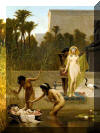

|
|
|
Exodus 2
|
|
| 2:1
And there went a man of the house of Levi, and took to wife a daughter of
Levi. |
|
| 2:2
And the woman conceived, and bare a son: and when she saw him that he was
a goodly child, she hid him three months. |
|
| 2:3
And when she could not longer hide him, she took for him an ark of
bulrushes, and daubed it with slime and with pitch, and put the child
therein; and she laid it in the flags by the river's brink. |

 (2:3) "She took for him an ark of bulrushes." (2:3) "She took for him an ark of bulrushes."
The birth story of Moses is suspiciously similar to that of the birth of Sargon, an
Akkadian monarch from the 3rd millennium BCE.
|
| 2:4
And his sister stood afar off, to wit what would be done to him.
|
| 2:5
And the daughter of Pharaoh came down to wash herself at the river; and
her maidens walked along by the river's side; and when she saw the ark among
the flags, she sent her maid to fetch it. |
The Finding of Moses
Frederick Goodall (1885)
|
| 2:6
And when she had opened it, she saw the child: and, behold, the babe wept.
And she had compassion on him, and said, This is one of the Hebrews'
children.
|
| 2:7
Then said his sister to Pharaoh's daughter, Shall I go and call to thee a
nurse of the Hebrew women, that she may nurse the child for thee?
|
| 2:8
And Pharaoh's daughter said to her, Go. And the maid went and called the
child's mother. |
|
| 2:9
And Pharaoh's daughter said unto her, Take this child away, and nurse it
for me, and I will give thee thy wages. And the women took the child, and
nursed it. |
|
| 2:10
And the child grew, and she brought him unto Pharaoh's daughter, and he
became her son. And she called his name Moses: and she said, Because I drew
him out of the water. |

 (2:11-12) Moses the murderer (2:11-12) Moses the murderer
Moses murders an Egyptian after making sure that no one is looking.
(2:11) "Moses ... spied an Egyptian smiting an Hebrew."
(2:12) "And he looked this way and that way, and when he saw that there was no man, he slew the Egyptian, and hid him in the sand."
|
| 2:11
And it came to pass in those days, when Moses was grown, that he went out unto his
brethren, and looked on their burdens: and he spied an Egyptian smiting an Hebrew, one of
his brethren.
|
| 2:12
And he looked this way
and that way, and when he saw that there was no man, he slew the Egyptian,
and hid him in the sand.
|
| 2:13
And when he went out the second day, behold, two men of the Hebrews strove
together: and he said to him that did the wrong, Wherefore smitest thou thy
fellow? |
|
| 2:14
And he said, Who made thee a prince and a judge over us? intendest thou to
kill me, as thou killedst the Egyptian? And Moses feared, and said, Surely this
thing is known. |
 (2:14-15) (2:14-15)
"Moses feared, and ... fled from the face of Pharaoh."
Did Moses fear the Pharaoh?
|
| 2:15
Now when Pharaoh heard this thing, he sought to slay Moses. But Moses fled from the face of
Pharaoh, and dwelt in the land of Midian: and he sat down by a well.
|
| 2:16
Now the priest of Midian had seven daughters: and they came and drew
water, and filled the troughs to water their father's flock. |
|
| 2:17
And the shepherds came and drove them away: but Moses stood up and helped
them, and watered their flock. |
|
| 2:18
And when they came to Reuel
their father, he said, How is it that ye are come so soon to day? |
(2:18) "Reuel their father"
Who was Moses' father-in-law?
|
| 2:19
And they said, An Egyptian delivered us out of the hand of the shepherds,
and also drew water enough for us, and watered the flock.
|
| 2:20
And he said unto his daughters, And where is he? why is it that ye have
left the man? call him, that he may eat bread.
|
| 2:21
And Moses was content to dwell with the man: and he gave Moses Zipporah
his daughter.
|
| 2:22
And she bare him a son, and he called his name Gershom: for he said, I
have been a stranger in a strange land. |
|
| 2:23
And it came to pass in process of time, that the king of Egypt died: and
the children of Israel sighed by reason of the bondage, and they cried, and
their cry came up unto God by reason of the bondage. |
|
| 2:24
And God heard their groaning, and God remembered his covenant with
Abraham, with Isaac, and with Jacob.
|
| 2:25
And God looked upon the children of Israel, and God had respect unto them. |
(2:25) "God had respect unto them."
Does God respect anyone?
|
|


{kind=link}